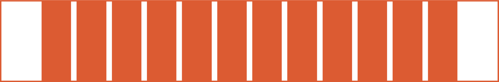
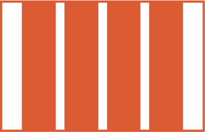

ABOUT
Falegnameria Corradi, founded by brothers Aldo and Giulio Corradi in the early 1970s, has a rich history in woodworking.
Aldo established the business in 1981 after qualifying as an Artisan, and Giulio joined as a partner in 1983. The workshop moved to Slaghenaufi, and Aldo's son, Simone , began his journey in the business in 2003.
Significant milestones include the construction of a new warehouse in 2006 , the acquisition of advanced machinery in 2010, and the installation of a 100 kW photovoltaic system in 2011, achieving near energy self-sufficiency.
Today, the company continues to thrive with a commitment to craftsmanship and innovation .
BRAND IDENTITY
The Logo
The selected logo for Falegnameria Corradi seamlessly encapsulates the essence of woodcraft.
Since the nature of the company I embraced a traditional, almost vintage look with a modern, minimal touch given by a contemporary touch in the logotype.
The choice of Six Caps as the typeface imparts a distinct character to the brand. In fact the tall, minimal and condensed letters provide a contrast to the irregular, rounded lines of the symbol.
This deliberate interplay of elements achieves a harmonious balance, evoking a sense of equilibrium between tradition and innovation.
In essence, Falegnameria Corradi's logo captures their dedication to traditional craftsmanship while embracing a forward-looking approach. It visually represents their ability to create a seamless connection between heritage and progress.
The payoff
“Lascia che il legno racconti la tua storia”
The payoff "Lascia che il legno racconti la tua storia" is a captivating and evocative statement. It translates to "Let the wood tell your story". This tagline conveys a sense of craftsmanship, personalization, and a deep connection to the material.
It suggests that each piece crafted by the Falegnameria Corradi is not just an object but a narrative, a unique tale embedded in the wood itself.
This tagline resonates with the idea that their skilled hands are dedicated to transforming wood into not just products, but meaningful and personalized stories for their clients.
The color palette
Incorporating the essence of Falegnameria Corradi into this colour palette, I draw inspiration from the woodcraft mastery and the connection to nature that defines their work.
The ivory background, reminiscent of natural wood tones, not only signifies purity but also echoes the warmth and authenticity of handcrafted wooden creations.
As the black text elegantly rests on this canvas, it symbolizes the precision and timeless craftsmanship.
Moreover, the vibrant orange accent, akin to the hues found in nature, serves as a nod to the inspiration drawn from the surrounding environment. It captures the spirit of the lively energy and the play of light on the crafted wooden surfaces, emphasizing the dynamic relationship between the artisanal creations and the natural world.
In summary, this colour palette, with its connection to wood, nature, and light, reflects the artisanal spirit and the unique storytelling embedded in each piece crafted by Falegnameria Corradi.
BLACK
Hex: #0D0806
Rgb: 13, 8, 6
IVORY
Hex: #FFF7F5
Rgb: 255, 247, 245
ACCENT
Hex: #DC5B32
Rgb: 220, 91, 50
DISCOVERY
The Sitemap
Developing a sitemap for this website involved an approach that carefully balanced several key factors:
-
Business needs: I prioritized the company's core objectives, ensuring that the sitemap structure supports key product offerings, service information, and conversion paths.
-
Competitor analysis: By examining successful competitors' websites, I identified industry best practices and potential gaps in the market that our sitemap could address.
-
User feedback: I incorporated valuable insights from user surveys and analytics data to create a navigation structure that aligns with user expectations and preferences.
-
Accessibility considerations: The sitemap was designed with inclusivity in mind, ensuring that all users, including those with disabilities, can easily navigate and access information.
-
Content hierarchy: I organized content in a logical, intuitive manner, grouping related information and creating clear pathways to important pages.
-
Scalability: The sitemap structure allows for future growth and the addition of new content without disrupting the overall user experience.
WIREFRAMING
The grid
Desktop
MARGIN: 120px
GUTTER: 16px
Mobile
MARGIN: 40px
GUTTER: 16px
USER INTERFACE
The Typography
The typography choices for Falegnameria Corradi's website effectively blend modern minimalism with traditional craftsmanship:
Six Caps for headings:
-
Provides a modern, minimalist touch
-
Reflects the company's innovative approach
-
Creates visual interest with its narrow, condensed design
Darker Grotesque for body text and buttons:
-
Ensures excellent legibility
-
Conveys a sense of solidity and reliability
-
Complements the traditional aspects of woodworking
Icons and Components
The website boasts a clean and minimalist design, prompting my decision to keep the look of the elements generally simple and compliant.
Simultaneously, I focused my effort on refining their animation behaviour, to give an original look to the website while preserving the minimal style.
Prototype
Figma
DEVELOPMENT
In developing the website for Falegnameria Corradi, I took a hands-on approach using HTML, CSS, and JavaScript. Here's an overview of my development process:
HTML Structure
I began by creating a solid HTML foundation, focusing on:
-
Semantic markup for improved accessibility and SEO
-
Responsive design principles to ensure compatibility across devices
-
Proper heading hierarchy to maintain a logical content structure
CSS Styling
For the visual design, I utilized CSS to:
-
Implement the chosen color palette, creating a warm and inviting atmosphere
-
Apply the selected typography, using Six Caps for headings and Darker Grotesque for body text
-
Create responsive layouts using flexbox and grid systems
-
Craft smooth transitions and hover effects to enhance user interaction
JavaScript Functionality
To add interactivity and improve user experience, I incorporated JavaScript to develop animations and connect sections.
By leveraging these technologies and techniques, I was able to create a website that not only reflects Falegnameria Corradi's brand identity but also provides an engaging and efficient user experience.
Website
Falegnameria Corradi